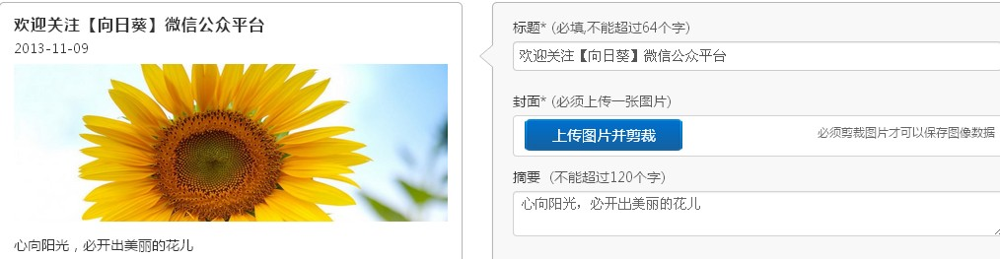
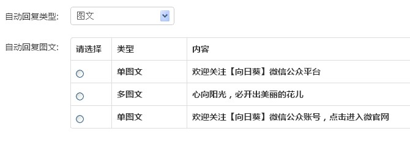
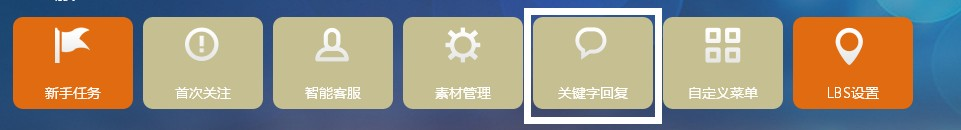
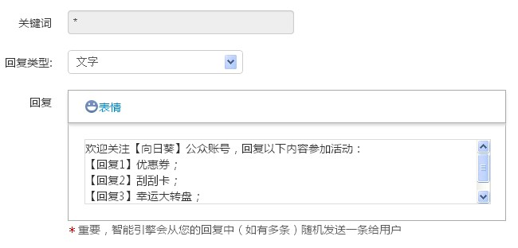
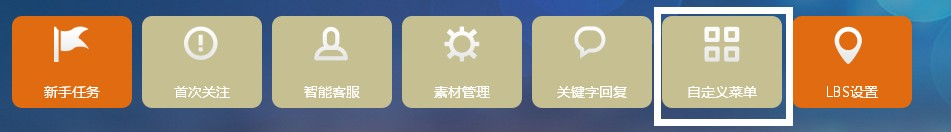
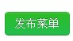

尊敬的用户：
欢迎回来，接下来，我将指引您开启您的智能之旅。
很多用户反映，功能这么多，不知道从哪开始，这里告诉您一个通用的流程，按照这个流程设置好以后，将能满足绝大多数用户的需求。
一、首先，我们先选择"素材管理"，添加公司相关资料的图文素材：
二、其次选择"首次关注"，设置粉丝首次关注时的欢迎语, 此时,您之前设置的素材列表就会出现在下面：
类型可以选择纯文字或图文.
三、接着需要设置关键词回复，增加您和粉丝的互动。
选择"关键字回复"进行设置，输入您的关键字，并回复对应的答案，多个关键字可以用分号分隔，拒绝中文逗号：
或者设置*，回复未匹配到的关键字:
四、可以根据你的实际需求开展一些刮刮卡、大转盘、一站到底、微调研之类的活动了。
活动的具体设置可以到微信达人学堂了解。
五、所有活动设置完成后，您需要在自定义菜单中设置您的客户端模板，并选中活动，每个菜单只能选择一个活动哦。

最后，点击发布菜单即可发布到粉丝客户端。
OK，这样整个微信智能营销之旅就基本完成了，下面是一些用户设置好的微信样板，供大家参考！
| 公众号名称 | 微信号 | 类型 |
|---|---|---|
| 阳光“959” | Yangguang959 | 广播媒体 |
| 宁波联通3G玩家 | Nb057410010 | 运营商 |
| 乐的时尚百货 | ldssbh | 百货商场（关键词1） |
| 深圳小梅沙海洋世界 | Szxms_seaworld | 游乐场（关键词：官网） |
| 重庆中海国际社区 | cqgjsq | 房地产（关键词：w） |
| 深圳伯爵巴黎婚纱摄影 | Szblhs8 | 婚纱摄影（关键词：微官网） |
| 咸阳交警 | Xianyangjiaojing122 | 政府机构（关键词：J） |
| 山水时尚酒店 | Shanshui4007160888 | 酒店（关键词：1） |
| 鼎弘世家养生会所 | dinghongshijia | 会所（关键词：1） |
| 青岛康大香港鲤鱼门 | qdliyumen | 餐饮（关键词：小鲤鱼） |
| 上海菲芘酒吧 | Phebe666666 | 酒吧（关键词：菲芘） |